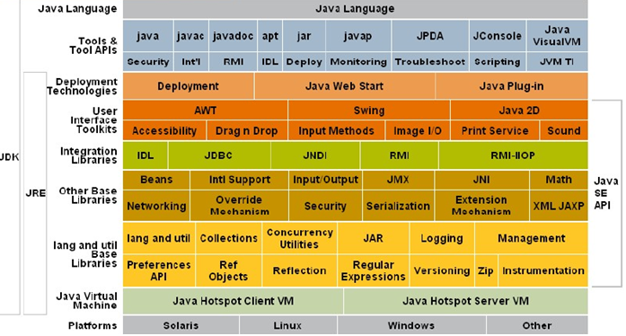
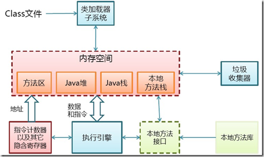
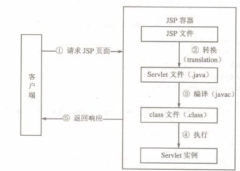
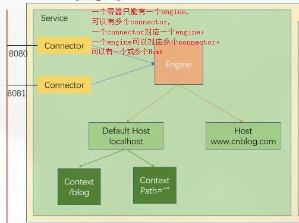
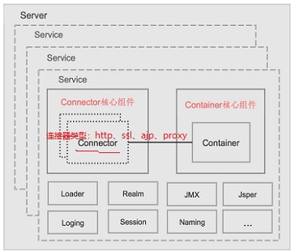
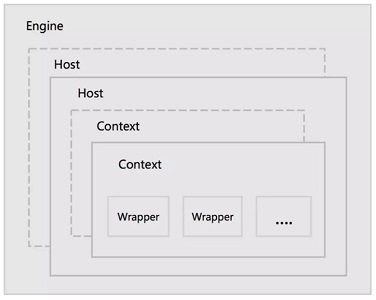

java 基础概念
程序：指令+数据
过程式编程：以指令为中心，数据服务于代码；
对象式编程：以数据为中心，指令服务于数据；
Java 是由Sun 推出的高级程序设计语言
Java是面向对象的，PHP还是采用面向过程的开发方法，Java的性能也优于PHP
JAVA运行原理 ：
Java具有跨平台的优点，在Java中引入了虚拟机制概念，即在机器和编译程序之间加入了一层抽象的虚拟的机器。这台虚拟的机器在任何平台上都提供给编译程序一个共同的接口
Java技术为三个方向：
J2SE：Standard Edition
J2EE：Enterprise Edition
J2ME：Mobile Edition
java总体来说就是java语言、java API、jvm等构成。
1.jvm：java虚拟机，java的代码都是运行在jvm上，这是java语言跨平台的保证，针对不同的系统jvm也不同，这就实现了同一份代码，通过不同jvm的运行可以让对应的操作系统识别。
2.JRE（java running environment）：就是提供给java代码一个运行环境，java代码运行在jvm上，但是开发程序的时候往往除本身代码外会有引入的api，当程序运行时，jvm会加载相关的类，所以一个能保证代码能正常运行的环境是jvm+api（java se api）。
3.JDK（java development kit）：java开发环境，JDK=java语言+开发相关的API+JRE。开发环境除了要正常运行程序外（JRE环境），还需要进行开发相关的操作如打包、编译等这类工具。

JVM 内存结构

java中通过多线程机制使得多个任务同时执行处理，所有的线程共享JVM内存区域main memory，而每个线程又单独的有自己的工作内存，当线程与内存区域进行交互时，数据从主存拷贝到工作内存，进而交由线程处理
方法区：线程共享； 用于存储被JVM加载的class信息、常量、静态变量、方法等；
堆：是jvm所管理的内存中占用空间最大的一部分；也是GC管理的主要区域；存储对象；
Java栈：线程私有，存储 线程自己的局部变量；
PC寄存器：线程私有的内存空间，程序的指令指针；
java文件执行过程
jsp-->jasper-->java-->Javac--.class-->Servlet
第一次执行被jsp类库组件jasper加载，jasper组件预处理jsp文件，将里面自身不是代码的内容转换为jar语句,输出结果变成一个纯java文件，包括了响应cgi程序调用，经由javac编译器编译为.class文件，交由servlet去调用jvm运行

tomcat
Tomcat 类似与一个apache的扩展型，属于apache软件基金会的核心项目，属于开源的轻量级Web应用服务器，是一个优秀的完全由Java语言编写的Servlet容器
JSP:Java Server Page
动态网页技术，出现在Servlet技术之后的,它和servle技术一样，都是SUN公司定义的一种用于开发动态web资源的技术。
JSP技术的最大的特点在于，写jsp就像在写html，但它相比html而言，html只能为用户提供静态数据，而Jsp技术允许在页面中嵌套java代码，为用户提供动态数据。
Jsp页必须转换成Servlet，才能对请求进行服务，因此Jsp的底层完全是Servlet
JSP工作原理
客户端浏览器向服务器端发出request请求，服务端接受请求之后会先检查此JSP文件是否存在
1).若不存在，则直接报错；
2).若存在，则接着检查所请求的这个JSP文件内容(代码)是否已经被更新，或者是否是JSP文件创建后的第一次被访问
■如果是，那么这个JSP文件将会在服务器端的JSP引擎下转换成一个Servlet的java源文件；接着这个Servlet类会在java编译器的作用下被编译成字节码文件，并装载到JVM中去执行。
■如果不是，则直接由服务器端检索出它对应的Servlet实例来处理。
注意：
JSP 文件不是在服务器启动的时候转换成 Servlet类的。
而是在被客户端访问的时候才可能发生转换的(如JSP文件内容没有被更新等，就不再发生Servlet转换)。
Servlet:
Servlet是JavaWeb的三大组件之一，它属于动态资源
Servlet完全运行在服务器端，因此它不依赖于浏览器。不管浏览器是否支持Java语言，都能请求访问服务器端的Servlet
CGI:Common Gateway Interface
外部应用用程序与HTTP服务器之间的接口协议
与CGI程序相比，Servlet具有以下优点：
Servlet是单实例多线程的运行方式，每个请求在一个独立的线程中运行，而提供服务的Servlet实例只有一个。
Servlet具有可升级性，能响应更多的请求，因为Servlet容器使用一个线程而不是操作系统进程，而线程仅占用有限的系统资源。
Servlet使用标准的API，被更多的Web服务器所支持。
Servlet使用Java语言编写，因此拥有Java程序语言的所有优点，包括容易开发和平台独立性。
Servlet可以访问Java平台丰富的类库，使得各种应用的开发更为容易。
Servlet容器给Servlet提供额外的功能，如错误处理和安全。
没有权限使用1024以内的端口
使用http或https协议 8080
常见的网页类型：
HTML&HTM：HyperText Markup Language 超文本连接标示语言 .html .html
ASP：Active Server Page 动态服务器页面（微软开发） .asp
ASP.net：ASP的下一个版本，也是建立在通用语言上的程序架构，网页后缀如aspx
PHP：Hypertext Preprocessor 超级本本预处理语言 .php .php5 .phps
JSP：JAVA Server Pages Sun Microsystems公司倡导，有点类似ASP技术 .jsp
Tomcat组成

Tomcat作为servlet容器,Servlet运行在Tomcat容器当中(如docker镜像运行在docker容器当中)
catalina 就是Tomcat服务器使用的 Apache实现的servlet容器的名字

Server：指的就是整个Tomcat服务器,包含多组服务,负责管理和启动各个Service，同时监听8005端口发过来的shutdown命令，用于关闭整个容器
Service：Tomcat封装的、对外提 供完整的、基于组件的web服务，包含Connectors、Container两个核心组件，以及多个功能组件，各个Service之间是独立的，但是共享同一JVM的资源
Connector：Tomcat与外部世界的连接器，监听固定端口接收外部请求，传递给Container,并将Container处理的结果返回给外部
Container：Catalina，Servlet容器，内部有多层容器组成，用于管理Servlet生命周期，调用servlet相关方法。
Loader：封装了 Java ClassLoader，用于Container加载类文件；
Realm：Tomcat中为web应用程序提供访问认证和角色管理的机制；
JMX：Java SE中定义技术规范，是一个为应用程序、设备、系统等植入管理功能的框架，通过 JMX 可以远程监控 Tomcat 的运行状态；
Jasper：Tomcat 的 Jsp 解析引擎，用于将Jsp转换成Java文件，并编译成class文件。
Session：负责管理和创建session，以及Session的持久化(可自定义)，支持session的集群。
Pipeline：在容器中充当管道的作用，管道中可以设置各种 valve(阀门)，请求和响应在经由管 道中各个阀门处理，提供了一种灵活可配置的处理请求和响应的机制。
Container组成

Engine：Servlet 的顶层容器,包含一个或多个Host子容器；
Host：虚拟主机，负责web应用的部署和Context的创建；
Context：Web应用上下文，包含多个Wrapper，负责web配置的解析、管理所有的Web资源；
Wrapper：最底层的容器，是对Servlet的封装，负责Servlet实例的创 建、执行和销毁。
Service对外提供Web应用服务，而Service核心组件Container的灵魂便是Servlet容器。
而真正管理Servlet的是Context容器。
Context容器直接管理Servlet在容器中的包装类Wrapper，一个Web应用对应一个Context容器。
添加一个Web应用就会创建一个Context容器，并将这个Context容器加入到父容器Host中。
Tomcat的工作模式运行模式
1.工作模式
Tomcat作为servlet容器，有三种工作模式：
1、独立的servlet容器
servlet容器是web服务器的一部分；然而大多数的Web服务器并非基于Java，因此，就有了下面两种Servlet容器的工作模式
2、进程内的servlet容器
servlet容器是作为web服务器的插件和java容器的实现，web服务器插件在内部地址空间打开一个jvm,使得Java容器可以在此JVM中加载并运行Servlet。
反应速度快但伸缩性不足；
3、进程外的servlet容器
servlet容器运行于web服务器之外的地址空间，并作为web服务器的插件和java容器实现的结合。Web服务器插件和Java容器（在外部JVM中运行）使用IPC机制（通常是TCP/IP）进行通信
反应时间不如进程内但伸缩性和稳定性比进程内优；
进入Tomcat的请求可以根据Tomcat的工作模式分为如下两类：
Tomcat作为应用程序服务器：请求来自于前端的web服务器，这可能是Apache, IIS, Nginx等；
Tomcat作为独立服务器：请求来自于web浏览器；
Tomcat的运行模式
Tomcat Connector(连接器)有三种运行模式：
bio(blocking I/O)
即阻塞式I/O操作，表示Tomcat使用的是传统的Java I/O操作(即java.io包及其子包)
一个线程处理一个请求
Tomcat7以下版本默认
缺点：并发量高时，线程数较多，浪费资源。三种模式中性能也最低
nio(new I/O)
Java nio是一个基于缓冲区、并能提供非阻塞I/O操作的Java API，因此nio也被看成是non-blocking I/O的缩写。
它拥有比传统I/O操作(bio)更好的并发运行性能。
利用Java 的异步请求 IO 处理，可以通过少量的线程处理大量的请求。
tomcat 8版本及以上默认就是在NIO模式下允许
apr(Apache Portable Runtime/Apache可移植运行时)
Tomcat将以JNI的形式调用Apache HTTP服务器的核心动态链接库来处理文件读取或网络传输操作，从而大大地提高Tomcat对静态文件的处理性能。
Tomcat apr也是在Tomcat上运行高并发应用的首选模式
Tomcat7或Tomcat8在Win7或以上的系统中启动默认使用这种方式。
Linux如果安装了apr和native，Tomcat直接启动就支持apr
生命周期
就是类的产生到销毁的过程。
servlet的生命周期：

加载并实例化 –> 初始化 –> 应用阶段（请求处理） –> 销毁
1.创建 Servlet 实例。
2.Web 容器调用 Servlet 的 init() 方法，对Servlet 进行初始化。
3.Servlet初始化后，将一直存在于容器中，用于响应客户端请求。根据客户端的请求方式通过 Servlet 中service() 方法去相应的 goGet(),或 doPost() 方法；
4.Web 容器销毁Servlet时，调用Servlet的destroy()方法，通常在关闭Web容器之时销毁Servlet。
扩展：
管理的servlet，商品管理的servlet等，servlet体系结构是建立在java多线程机制之上的，servlet容器会自动使用线程池等技术来支持系统的运行。
当servlet被部署在应用服务器中（应用服务器中用于管理Java组件的部分被抽象成为容器）以后，由容器控制servlet的生命周期。
除非特殊制定，否则在容器启动的时候，servlet是不会被加载的，servlet只会在第一次请求的时候被加载和实例化。
servlet一旦被加载，一般不会从容器中删除，直至应用服务器关闭或重新启动。但当容器做内存回收动作时，servlet有可能被删除。也正是因为这个原因，第一次访问servlet所用的时间要大大多于以后访问所用的时间
jsp的生命周期：
转换，编译，加载并实例化，初始化（_jspInit），请求处理（_jspService()调用），销毁（_jspDestory()）。
转换：就是web容器将JSP文件转换成一个包含了Servlet类定义的java源文件。
编译：把在转换阶段创建的java源文件变异成类文件。
JSP生命周期其他的四个阶段跟Servlet生命周期相同
注意：
在正常情况下，Servlet只会初始化一次，而处理服务会调用多次，销毁也只会调用一次
但是如果一个Servlet长时间不使用的话，也会被容器自动销毁，而如果需要再次使用时会重新进行初始化的操作，即在特殊情况下初始化可能会进行多次，销毁也可能进行多次
jsp servlet的区别和联系
JSP在本质上就是SERVLET,但是两者的创建方式不一样.
Servlet完全是JAVA程序代码构成，擅长于流程控制和事务处理，通过Servlet来生成动态网页很不直观.
JSP由HTML代码和JSP标签构成，可以方便地编写动态网页.
因此在实际应用中采用Servlet来控制业务流程，而采用JSP来生成动态网页.
JSP是Servlet技术的扩展，本质上就是Servlet的简易方式。
JSP编译后是“类servlet”。
Servlet和JSP最主要的不同点在于，Servlet的应用逻辑是在Java文件中，并且完全从表示层中的HTML里分离开来。而JSP是Java和HTML组合成一个扩展名为.jsp的文件。
JSP侧重于视图，Servlet主要用于控制逻辑